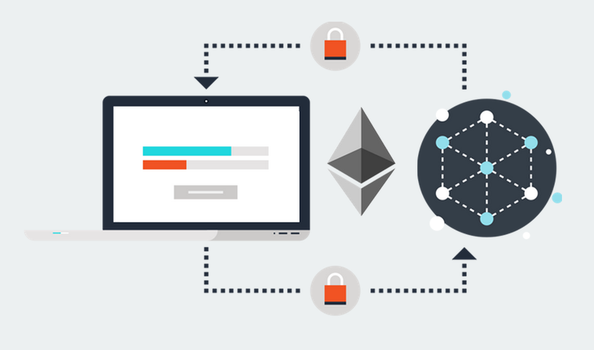

Intruducción al desarrollo de Smart Contracts
Maximiliano Cañellas
Cryptologic Law & Fintech
cryptologic.io
¿Qué es un Smart Contract?
Un Smart Contract es, básicamente, un programa que tiene un set de instrucciones predefinidos y que funciona sobre una plataforma Blockchain.
¿Cómo funciona?
- OPCodes + complejos (que Bitcoin)
- EVM based blockchains
- Consumen unidades de gas GAS
- Aplicaciones descentralizadas / transparentes (DApps)
Existen diferentes tipos:
- EVMs (Ethereum)
- Chaincode (Hyperledger)
- Otros
Componentes de un Smart Contract
- ABI (Application Binary Interface)
- Source Code
- Bytecode
Algunas DApps
- CryptoKitties
- CryptoCup
- Tokens ERC20 (ICOs)
Lenguajes para Smart Contracts
- Solidity (JSish like)
- Serpent (Python like)
- LLL (¿?)
- Otros
Algunas particularidas de los Smart Contracts
- Las direcciones son aleatorias
- Las direcciones públicas NO poseen privkeys asociadas a la misma
- Los contratos pueden contener balances (Ether/Tokens)
- Una vez deployeados los contratos no pueden modificarse
- Se pueden decir que existen dos tipos de llamadas a contratos (Calls y Transactions)
Configurando el entorno
Para poder probar nuestros Smart Contracts necesitamos una EVM disponible donde poder probar la funcionalidad sin costo asociado de GAS/Ether real
Componentes:
- Compilador
- EVM
- IDE
- Framework de testing
Herramientas a utilizar
- Solc (compiler)
- EVM (Testrpc / Ganache)
- Sublime/Atom/VSCode/otros <- (Ninguno es el mejor no quiero desatar una guerra nerd)
- Truffle (unit testing)
- Web3 (conexión programática a blockchain/contratos)
¡Muchas gracias!
¿Preguntas?
Estamos sumando programadores al staff ¿interesado/a?
Contactanos con tu CV/Github en: jobs@cryptologic.io